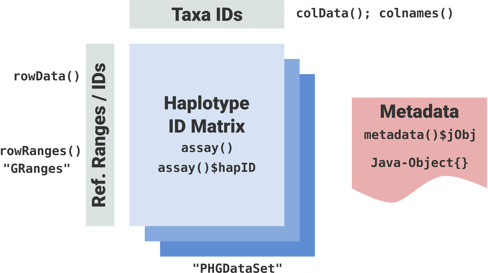
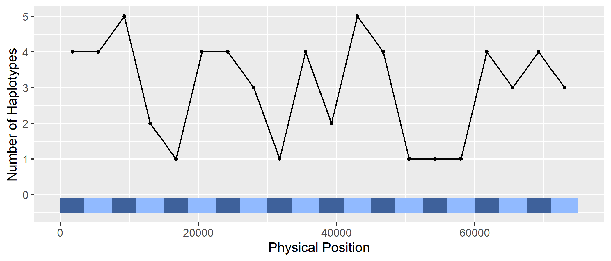
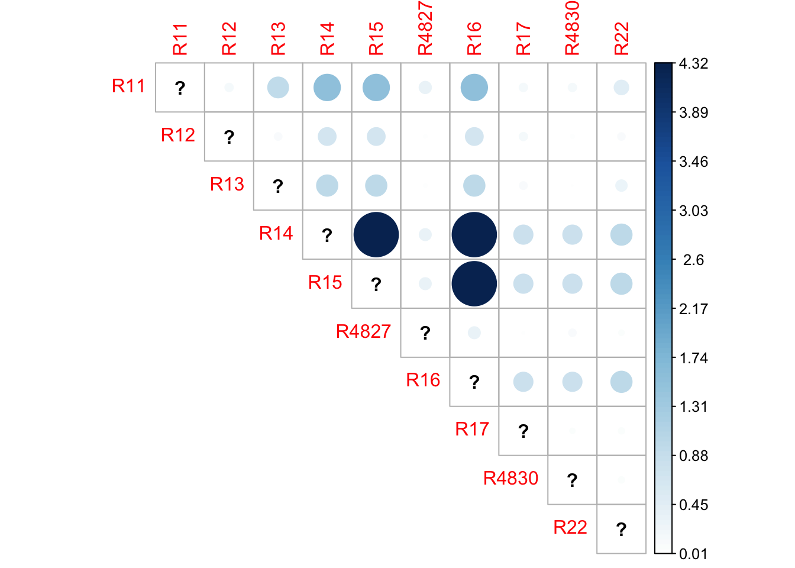

Getting Started with rPHG
Brandon Monier
2019-12-05 at 13:21:26
rphg_walkthrough.RmdIntroduction
Overview
Thanks for checking out rPHG! In this document, we will go over the functionalities used to work with the practical haplotype graph (PHG) API via R.
The PHG is a trellis graph based representation of genic and intergenic regions (called reference ranges or reference intervals) which represent diversity across and between taxa. It can be used to: create custom genomes for alignment, call rare alleles, impute genotypes, and efficiently store genomic data from many lines (i.e. reference, assemblies, and other lines). Skim sequences generated for a given taxon are aligned to consensus sequences in the PHG to identify the haplotype node at a given anchor. All the anchors for a given taxon are processed through a Hidden Markov Model (HMM) to identify the most likely path through the graph. Path information is used to identify the variants (SNPs). Low cost sequencing technologies, coupled with the PHG, facilitate the genotyping of large number of samples to increase the size of training populations for genomic selection models. This can in turn increase predictive accuracy and selection intensity in a breeding program.
Detailed documentation and source code can be found on our website:
https://bitbucket.org/bucklerlab/practicalhaplotypegraph/wiki/Home
Installation and Preliminary Steps
Prerequisites - installing rJava
Since the PHG is written in Java, Java JDK will need to be installed
on your machine. Additionally, for R to communicate with Java, the R
package rJava will need to be installed. Detailed
information can be found using the following links, depending on your
OS:
Problems with rJava if you have upgraded Java
When using macOS, if you previously had rJava working
through RStudio, then you upgraded your Java and it now longer works,
try the following:
At the command line type:
R CMD javareconfThen check for a left over symbolic link via:
ls -ltr /usr/local/lib/libjvm.dylibIf the link exists, remove it, then create it fresh via these commands:
rm /usr/local/lib/libjvm.dylib
sudo ln -s $(/usr/libexec/java_home)/lib/server/libjvm.dylib /usr/local/libYou should now be able to enter RStudio and setup rJava.
Install from BitBucket
After you have rJava up and running on your machine,
install rPHG by installing the source code from our
BitBucket repository:
if (!require("devtools")) install.packages("devtools")
devtools::install_bitbucket(
repo = "bucklerlab/rphg",
ref = "master",
build_vignettes = TRUE
)After source code has been compiled, the package can be loaded using:
Or, if you want to use a function without violating your environment
you can use rPHG::<function>, where
<function> is an rPHG function.
Preliminary steps
Setting Memory
Since genome-wide association analyses can use up a lot of
computational resources, memory allocation to rPHG can be
modified. To change the amount of memory, use the base
options() function and modify the following parameter:
Replace <memory> with a specified unit of memory.
For example, if I want to allocate a maximum of 6 GB of memory for my
operations, I would use the input "-Xmx6g", where
g stands for gigabyte (GB). More information about memory
allocation can be found here.
NOTE: Setting Java memory options for
rPHG and any rJava-related packages
needs to be set before loading the rPHG
package!
The importance of logging your progress
Before we begin analyzing data, optional parameters can be set up to
make rPHG more efficient. To prevent your R console from
being overloaded with PHG logging information, it is highly
recommended that you start a logging file. This file will house
all of PHG’s logging output which is beneficial for debugging and
tracking the progress of your analytical workflow. To start a logging
file, use the following command:
rPHG::startLogger(fullPath = NULL, fileName = NULL)If the rPHG::startLogger() parameters are set to
NULL, the logging file will be created in your current
working directory. If you are unsure of what your working directory is
in R, use the base getwd() command.
Additionally, since this is a general walkthrough, certain
intricacies of each function may glossed over. If you would like to
study a function in full, refer to the R documentation by using
?<function> in the console, where
<function> is an rPHG-based
function.
Databases and Configuration Files
Overview
The idea behind the PHG is that in a given breeding program, all parental genotypes can be sequenced at high coverage, and loaded as parental haplotypes in a relational database. Progeny can then be sequenced at low coverage and used to infer which parental haplotypes/genotypes from the database are most likely present in a given progeny.
Database types
Currently, the PHG can use SQLite or PostgreSQL to store data for the pan-genomic graph. For more information about how data is stored within the database schema, please refer to our wiki.
Configuration files
Access to the PHG database, regardless of database type, requires a configuration file. This file contains various metadata needed to access the PHG db and calculate optimal graph paths:
- host:port
- username
- password
- database name
- database type (sqlite or postgres)
An example database configuration can be found below:
SQLite example
host=localHost
user=sqlite
password=sqlite
DB=/tempFileDir/outputDir/phgTestDB_mapq48.db
DBtype=sqlitePostgreSQL example
host=172.17.0.2:5432
user=postgres
password=phgP0stgr3s
DB=phgdb
DBtype=postgresDatabase Access and Graph Building
Method calling
Once you have a PHG database and configuration file, you can proceed to the following steps. First, you can access all availabe PHG methods from the database using a path parameter to the database configuration file:
# Example path location (not run)
configPath <- "/home/bm646/Temporary/phg_tests/configSQLite.txt"
phgMethods <- rPHG::showPHGMethods(configFile = configPath)
phgMethods## # A tibble: 7 x 5
## method_id method_type type_name method_name description
## <int> <int> <chr> <chr> <chr>
## 1 1 1 ANCHOR_HAPLOTYP~ B73Ref_method Test version for ~
## 2 2 7 REF_RANGE_GROUP refRegionGroup Group consists of~
## 3 3 7 REF_RANGE_GROUP refInterRegionG~ Group consists of~
## 4 4 2 ASSEMBLY_HAPLOT~ mummer4 Assembly aligned ~
## 5 5 1 ANCHOR_HAPLOTYP~ GATK_PIPELINE GATK_PIPELINE cre~
## 6 6 1 ANCHOR_HAPLOTYP~ CONSENSUS CONSENSUS for cre~
## 7 7 1 ANCHOR_HAPLOTYP~ consensusTest consensusTest;det~The above object will produce a tibble-based data frame
that will contain return method data from the PHG database. Method IDs
and descriptions can be viewed for additional information detailing the
methods available to use when building the PHG graph object.
Graph building
Next, we can build the optimal graph object. A single function,
called graphBuilder, will be used with subsequent
parameters:
phgObj <- graphBuilder(
configFile = config_path,
methods = "GATK_PIPELINE"
)Where:
-
configFile: the path to our PHG database configuration file; -
methods: one of the prior methods in theshowMethods()function call, specifically, themethod_namecolumn (see prior output).
When the graph has finished building, we can then inspect the object:
phgObj## class: PHGDataSet
## dim: 20 6
## metadata(1): jObj
## assays(1): hapID
## rownames(20): R1 R11 ... R10 R20
## rowData names(1): refRange_id
## colnames(6): LineA LineA1 ... Ref RefA1
## colData names(0):When built, the object that is generated is of a
PHGDataSet class. In the next section, we will discuss how
to extract specific data from this object.
Accessing data
Overview
When called, the PHGDataSet shows the similar output to
a SummarizedExperiment or
RangedSummarizedExperiment class. More information about
this commonly used Bioconductor class can be found here.
This is due to the PHGDataSet class inheriting all methods
and slot information from a SummarizedExperiment class.
Therefore, we can use general accessor methods from either the
SummarizedExperiment or S4Vectors packages.
Some examples are as follows:
assay()colData()rowData()rowRanges()metadata()
A more detailed example of how these methods can be used in a
PHGDataSet are shown below:

The three main data types that can be extracted is:
-
rowRanges();rowData(): reference range data -
colData();colnames(): taxa (i.e. genotype) data -
assay(): haplotype or path ID data in matrix form -
metadata(): access to the PHG API Java object (for advanced use only)
Getting reference range data
Reference range data can be accessed via the rowRanges()
method. To use this, simply call this function on the prior PHG object
(e.g. phgObj from out prior examples):
# Make a `GRanges` object
rr <- SummarizedExperiment::rowRanges(phgObj)
rr## GRanges object with 20 ranges and 1 metadata column:
## seqnames ranges strand | refRange_id
## <Rle> <IRanges> <Rle> | <factor>
## R1 1 1-3500 * | R1
## R11 1 3501-7500 * | R11
## R2 1 7501-11000 * | R2
## R12 1 11001-15000 * | R12
## R3 1 15001-18500 * | R3
## ... ... ... ... . ...
## R18 1 56001-60000 * | R18
## R9 1 60001-63500 * | R9
## R19 1 63501-67500 * | R19
## R10 1 67501-71000 * | R10
## R20 1 71001-75000 * | R20
## -------
## seqinfo: 1 sequence from an unspecified genome; no seqlengthsWhat has been extracted is an object of GRanges class.
This is another commonly used class in the “Bioconductor universe” to
represent genomic intervals. More information about this package can be
found here.
Within this objecct, we get specified reference range information:
-
seqnames: the chromosome from which this reference range is found on -
ranges: anIRangesobject that contains reference range coordinates -
strand: which strand for each reference range (+,-,*) -
refRange_id: given reference range ID within the PHG database
From this object, we can then use additional methods to extract more specific details such as start/stop coordinates and width of each reference range:
GenomicRanges::ranges(rr)IRanges object with 20 ranges and 0 metadata columns:
start end width
<integer> <integer> <integer>
R1 1 3500 3500
R11 3501 7500 4000
R2 7501 11000 3500
R12 11001 15000 4000
R3 15001 18500 3500
... ... ... ...
R18 56001 60000 4000
R9 60001 63500 3500
R19 63501 67500 4000
R10 67501 71000 3500
R20 71001 75000 4000Due to the wonderful world of “inheritance”, we can also call this
function directly on SummarizedExperiment objects and
therefore our main PHGDataSet object:
SummarizedExperiment::ranges(phgObj)IRanges object with 20 ranges and 0 metadata columns:
start end width
<integer> <integer> <integer>
R1 1 3500 3500
R11 3501 7500 4000
R2 7501 11000 3500
R12 11001 15000 4000
R3 15001 18500 3500
... ... ... ...
R18 56001 60000 4000
R9 60001 63500 3500
R19 63501 67500 4000
R10 67501 71000 3500
R20 71001 75000 4000Getting haplotype data
Additionally, haplotype identifiers can also be acessed from this
data object. This is obtained using the assays() method,
calling specifically, the haplotype ID matrix ($hapID):
SummarizedExperiment::assays(phgObj)$hapID## LineA LineA1 LineB LineB1 Ref RefA1
## R1 41 101 61 121 21 81
## R11 51 111 71 131 31 91
## R2 42 102 62 122 22 82
## R12 52 112 72 132 32 92
## R3 43 103 63 123 23 83
## R13 53 113 73 133 33 93
## R4 44 104 64 124 24 84
## R14 54 114 74 134 34 94
## R5 45 105 65 125 25 85
## R15 55 115 75 135 35 95
## R6 46 106 66 126 26 86
## R16 56 116 76 136 36 96
## R7 47 107 67 127 27 87
## R17 57 117 77 137 37 97
## R8 48 108 68 128 28 88
## R18 58 118 78 138 38 98
## R9 49 109 69 129 29 89
## R19 59 119 79 139 39 99
## R10 50 110 70 130 30 90
## R20 60 120 80 140 40 100The above matrix represents a haplotype ID for each taxa (column names) within the PHG database at each given reference range (row names).
Access Java data
(NOTE: for advanced use only!) To access
Java object data for the PHG API, the metadata() method
from S4Vectors can be used. Doing so will return a Java
reference object that can be used for defining you own potential
functions and methods that do not exist within the rPHG
package:
S4Vectors::metadata(phgObj)$jObj## [1] "Java-Object{net.maizegenetics.pangenome.api.HaplotypeGraph@f381794}"Summary Functions
Overview
Additionally, rPHG currently has several summary- and
visualization-based functions. These include ways to determine levels of
similarity between reference ranges and taxa.
Determine numbers of haplotypes per reference range
To see the total number of haplotypes at each given reference range,
the function, numHaploPerRange() can be used:
rPHG::numHaploPerRange(phgObject = phgObj)## DataFrame with 20 rows and 5 columns
## names start end width numHaplotypes
## <character> <integer> <integer> <integer> <integer>
## 1 R1 1 3500 3500 6
## 2 R11 3501 7500 4000 6
## 3 R2 7501 11000 3500 6
## 4 R12 11001 15000 4000 6
## 5 R3 15001 18500 3500 6
## ... ... ... ... ... ...
## 16 R18 56001 60000 4000 6
## 17 R9 60001 63500 3500 6
## 18 R19 63501 67500 4000 6
## 19 R10 67501 71000 3500 6
## 20 R20 71001 75000 4000 6The data that is returned will contain each reference range
coordinate, IDs, and the number of haplotypes per range
(numHaplotypes). This data can also be passed to a plotting
function, plotNumHaplo() which will display the prior data
as a linear genomic plot. If you are familiar with pipe
(%>%) operators in R via the magrittr
package, this pipeline from PHGDataSet to visualization can
be used as well:
library(magrittr)
# (1) Non-pipe example
haploPlot <- plotNumHaplo(numHaploPerRange(phgObject = phgObj))
# (2) Pipe example. Need to load `magrittr` package first!
haploPlot <- phgObj %>%
rPHG::numHaploPerRange() %>%
rPHG::plotNumHaplo()
# Return visualization
haploPlot
Each reference range is displayed as blue-colored rectangle based on its physical position within the genome while the y-axis denotes the total number of unique haplotype IDs per reference range.
Visualize mutual information between pairs of ranges
plotMutualInfo() plots the “amount of mutual
information” obtained about one random variable through observing the
other random variable. The higher the numeric value, the more related
taxa for a given reference range.
For this function, a PHGDataSet and reference range IDs
in the form of a vector (e.g. c("R1", "R2", "R3")) are
needed. This function can also be piped using the %>%
operator from magrittr.
library(magrittr)
phgObj %>%
rPHG::plotMutualInfo(
refRanges = assays(phgObj)$hapID %>%
rownames()
)